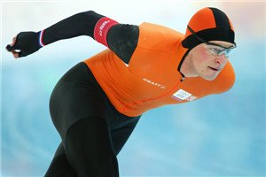
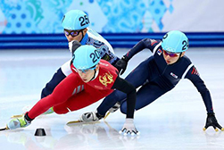
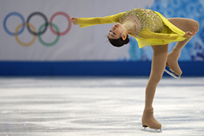
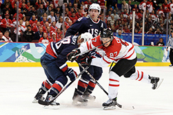
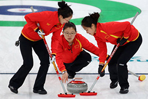
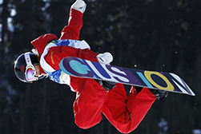
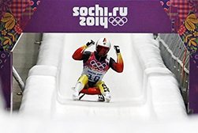

| Winter Games | Description | Image |
|---|---|---|
| Speed Skating | Speed skating involves two athletes wearing skates that start simultaneously and compete speeding on a 400m ice track. |  |
| Short Track Speed Skating | Short track speed skating is a skating competition that takes place on a 111.12m track in a 960x30m ice rink. As it uses a shorter track than the conventional 400m track, it is often called short track. |  |
| Figure Skating | Figure skating has developed from a practical way to get around on ice into the elegant mix of art and sport. |  |
| Ice Hockey | Ice hockey is a fast, fluid and exciting team sport. It draws big crowds at the Olympic Winter Games thanks to the drama and tension of the matches. |  |
| Curling | Starting from the Nagano 1998 Olympic Winter Games, curling was adopted as an official sport, with two curling events – men’s and women’s curling. |  |
| Snowboard | Snowboard is a sport that uses a board attached to rider's feet to speed down a slope. Snowboard was first developed as a sport in the United States in the 1960s. |  |
| Luge | Luge riders hurtle down a slippery ice track at great speed, relying on reflexes for steering. Unlike bobsleigh, however, they have no protection should they make an error. |  |